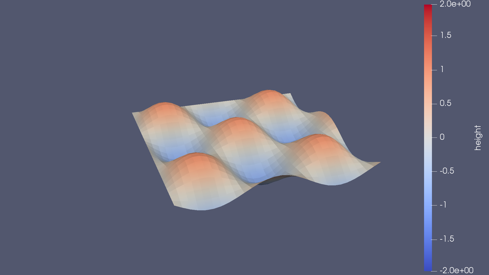
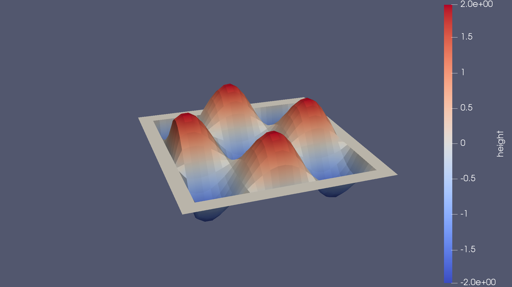

In this tutorial the basic usage of GTClang will be demonstrated using a simple example. Note that we will not directly interact with dawn, rather, GTClang will run dawn in the background to generate our code. To follow this tutorial, please make sure that you compiled GTClang with the GTCLANG_ENABLE_GRIDTOOLS=ON flag. See the Readme in the dawn subfolder on information on how to do that.
For the purpose of this exercise, we will write a simple Finite Difference Stencil to find the Laplacian of a function. In GTClang, this can be achieved using very few lines of code as demonstrated in laplacian_stencil.cpp:
``` globals { double dx; //grid spacing };
stencil laplacianstencil { storageij outfield; storageij infield; Do() { verticalregion(kstart, kend) { outfield[i,j] = (-4*infield + infield[i+1] + infield[i-1] + infield[j-1] + infield[j+1])/(dx*dx); } } }; ```
We define two fields which will serve as the arguments to our stencil. The variable dx is the grid spacing and is read-only (during the stencil run), which is modelled as a global in GTClang. Observe how close the actual Laplacian stencil is to the numerical formula (c.f. for example wikipedia), which close to no boiler plate. Save the stencil as laplacian_stencil.cpp.
For the purpose of this tutorial we are going to use the C++-naive backend. To compile the stencil use:
./gtclang -backend=c++-naive laplacian_stencil.cpp -o laplacian_stencil_cxx_naive.cpp
GTClang now wrote a code file for us that can be compiled with any C++11 compliant compiler. However, for the stencil to do something useful some driver code that fills the in_field and reads the out_field. For the purpose of this exercise we are goanna initialize in field to a wave function in(x,y) = sin(x)*sin(y) since the Laplacian of this is the same wave again, but with inverted phase and twice the amplitude, and thus easy to check. The driver code is located in laplacian_driver.cpp and should be straight forward. The actual stencil launch is just one line:
dawn_generated::cxxnaive::laplacian_stencil laplacian_naive(dom, out, in);
laplacian_naive.set_dx(dx);
laplacian_naive.run(out, in); //launch stencil
the run method could now be called in a time loop, for example to simulate diffusion. To facilitate the compilation, a CMakeLists.txt file has been provided. To compile the code:
cmake . && make
This will place an executable called laplacian_driver in the tutorial folder. When run, two vtk files will be written. Those can be viewed using (ParaView)[https://www.paraview.org/]. in.vtk shows the initial conditions. If out.vtk is loaded on top, the inversion of phase and twicefold increase in amplitude can clearly be seen, as well as the halos around the domain, which would overlap with a "neighboring" MPI rank in practical implementations.
 